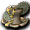

波特
波特
我們伺服器實際的怪物設定（不是日版 wiki 的資料）。
能力值
| 項目 | 本伺服器 | 日版 wiki |
| 等級 | 1 | 5 |
| HP | 8～10 | 80 |
| AC | 98 | 127 |
| MC | 100 | 90 |
| AAR | 12 | 20 |
| SAR | 0 | -10 |
| STR | 1 | 3 |
| DEX | 1 | 3 |
| INT | 1 | 3 |
| WIS | 1 | 3 |
| CON | 1 | 3 |
| 經驗值 | 48 | 50 |
| 名聲值 | 0 | 0 |
| 金錢 | 10 | 20 |
| 攻擊屬性 | 無 | 水 |
| 防禦屬性 | 無 | 水 |
出現地圖
| 地圖 | 數量 | 出現位置 |
| 斯歐米森林1 | 262 | 整張地圖 |
掉落物品
| 道具 | 基本機率 |
 生命之水 生命之水 | 6% |
 魔力之水 魔力之水 | 6% |
| a | 5% |
 土耳其石 土耳其石 | 5% |
 助祭之袍 助祭之袍 | 0.15% |
 女修行服 女修行服 | 0.15% |
 女潛行服 女潛行服 | 0.15% |
 女戰士服 女戰士服 | 0.15% |
 [2]波特變身捲軸 [2]波特變身捲軸 | 0.5% |
 強力魔力之水處方 強力魔力之水處方 | 8% |
 修行服 修行服 | 0.15% |
 木劍 木劍 | 0.15% |
 [14]柒式刃材料B [14]柒式刃材料B | 0.1% |
| [14]伍式刃材料C | 0.1% |
| [13]參式魔法卡組材料C | 0.1% |
| [99]柒式魔法卡組材料D | 0.1% |
| [12]伍式劍卡材料A | 0.1% |
| [12]捌式劍卡材料A | 0.1% |
| [99]伍式劍卡材料A | 0.1% |
| [99]伍式劍卡材料D | 0.1% |
| [26]小紅帽變身捲軸 | 0.1% |
 幼龍大師之服 幼龍大師之服 | 0.05% |
 長老武道之魂 長老武道之魂 | 0.05% |
| 迪普勞德短衫 | 0.05% |
| DEX神器 1 階段製造法 | 0.1% |
| 刃緣護具 2 階段製造法 | 0.1% |
| 墮落天使之泰倫製造法 | 0.1% |
 蘭博特盾製造法 蘭博特盾製造法 | 0.1% |
| DEX神器 5 階段製造法 | 0.1% |
| AAR增幅器 1 階段製造法 | 0.1% |
| DAM增幅器 2 階段製造法 | 0.1% |
| DAM增幅器 5 階段製造法 | 0.1% |
| CON／DEX增幅器 2 階段製造法 | 0.1% |
| STR／CON增幅器 3 階段製造法 | 0.1% |
| 元素耳環製造法 | 0.1% |
| DAM極大器 1 階段製造法 | 0.1% |
| 防禦手套製造法 | 0.3% |
| 墮落天使之法帽製造法 | 0.3% |
 曼陀林製造法 曼陀林製造法 | 0.3% |
| 妖獸窟傳送捲軸製造法 | 0.3% |
 泰特拉戰士胸甲AG 泰特拉戰士胸甲AG | 0.05% |
 泰特拉潛行服 泰特拉潛行服 | 0.05% |
 泰特拉傳說之服UG 泰特拉傳說之服UG | 0.05% |
 泰特拉王國騎兵甲 泰特拉王國騎兵甲 | 0.05% |
 泰特拉戴普勞德短袍UG 泰特拉戴普勞德短袍UG | 0.05% |
| 泰特拉女戰士服 | 0.05% |
 泰特拉女劍俠胸甲AG 泰特拉女劍俠胸甲AG | 0.05% |
 泰特拉炫麗女歌者服UG 泰特拉炫麗女歌者服UG | 0.05% |
 泰特拉王國女騎兵甲 泰特拉王國女騎兵甲 | 0.05% |
 泰特拉女騎士甲UG 泰特拉女騎士甲UG | 0.05% |
 泰特拉聖潔女騎士甲UG 泰特拉聖潔女騎士甲UG | 0.05% |
 泰特拉戴普朗短袍UG 泰特拉戴普朗短袍UG | 0.05% |
 泰特拉亞法斯罩袍 泰特拉亞法斯罩袍 | 0.05% |
 混合劑處方4 混合劑處方4 | 0.1% |
| 增強精華處方2 | 0.1% |
| 變偉大丸Z處方 | 0.1% |
| 變強壯丸S處方 | 0.1% |
| WIS神器 1 階段製造法 | 0.3% |
| 防禦綁腿製造法 | 0.3% |
| 強化墮落天使之女法帽製造法 | 0.3% |
| 喪失之聖書製造法 | 0.3% |
 聖職者鎧甲 4 階段製造法（男） 聖職者鎧甲 4 階段製造法（男） | 0.3% |
| 手杖製造法 | 0.3% |
 小火把 小火把 | 0.05% |
 最佳情侶戒[女用] 最佳情侶戒[女用] | 0.05% |
 黑暗連刺槍 黑暗連刺槍 | 0.1% |
 [極限吉他]製造法 [極限吉他]製造法 | 0.1% |
| [1日]惡魔之戒 | 0.05% |
 碳纖維釣竿 碳纖維釣竿 | 0.05% |
 卡琳召喚捲軸 卡琳召喚捲軸 | 0.1% |
| 忠誠之證 2 階段製造法 | 0.3% |
| 強化墮落天使之盾製造法 | 0.3% |
| STR增幅器 4 階段製造法 | 0.3% |
| 忘卻之迪姆製造法 | 0.3% |
| WIS增幅器 3 階段製造法 | 0.3% |
| 幼龍大師之服 | 0.05% |
| 達吉綁腿製造法 | 0.3% |
| 護甲腕帶製造法 | 0.3% |
| 墮落天使之戰盔製造法 | 0.3% |
| AC極小器 1 階段製造法 | 0.3% |
 出發雜耍頭飾 | 0.05% |
| 出發女強者之衣 | 0.05% |
 出發女學徒之衣 出發女學徒之衣 | 0.05% |
 出發凡爾登劍卡 出發凡爾登劍卡 | 0.05% |
| 出發潛行者之衣 | 0.05% |
| 暗黑護脛帶製造法 | 0.1% |
| 強化墮落天使之法帽製造法 | 0.1% |
| 應驗的預言 5 階段製造法 | 0.1% |
 避魔之捲軸-閻 避魔之捲軸-閻 | 0.1% |
| 強化墮落天使之盾製造法 | 0.3% |
| DEX增幅器 4 階段製造法 | 0.3% |
| 盜賊鎧甲 1 階段製造法（女） | 0.3% |
| 高級毒恢復捲軸 | 0.1% |
| [3次]寶珠4階段升級捲軸 | 0.1% |
| [3次]豎琴2階段升級捲軸 | 0.1% |
| 防禦鞋罩製造法 | 0.3% |
| 刃緣護具 3 階段製造法 | 0.3% |
| 仿製板甲 | 0.05% |
 修練用長槍 修練用長槍 | 0.05% |
 長老寶藏短衫 長老寶藏短衫 | 0.05% |
 透明頭（女） 透明頭（女） | 0.05% |
基本機率再乘上伺服器的掉寶倍率；「隨機一件」是從一組道具裡抽一件。